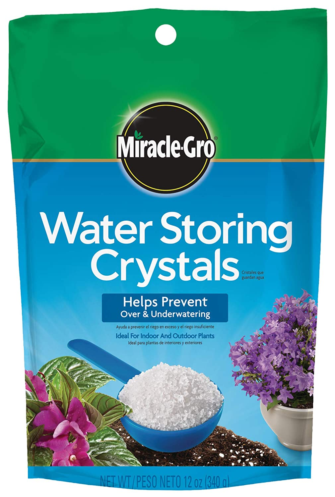

Cristales de sal
Estos son pequeños cristales de sal que almacenan agua para mantener tus plantas hidratadas. Lo puedes mezclar con la tierra y el abono que utilizas regularmente. Está disponible en una presentación de 12 onzas.
Funcionará para reducir el estrés hídrico y proteger a las plantas durante los días calurosos. Si sueles viajar con frecuencia, este producto te permite tener tus plantas bien hidratadas, sin que tengas que agregar agua constantemente.